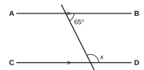
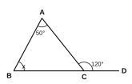
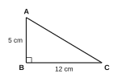
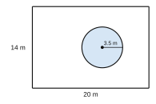
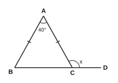

| පරීක්ෂකගේ ප්රයෝජනය සඳහා පමණි | |
|---|---|
| I කොටස – A | / 30 |
| I කොටස – B | / 20 |
| II කොටස | / 50 |
| එකතුව | / 100 |
A කොටස – සියලුම ප්රශ්නවලට දී ඇති ඉඩෙහි පිළිතුරු සපයන්න. (එකකට ලකුණු 2)
5, 8, 11, 14, … සංඛ්යා රටාවේ සාධාරණ පදය (n වන පදය) ලියන්න.
45 සංඛ්යාව ද්විමය සංඛ්යාවක් ලෙස (දෙකේ පාදයෙන්) ලියන්න.
සුළු කරන්න: 213 ÷ 134
කමිසයක ලකුණු කළ මිල රු. 2400 කි. 15% ක වට්ටමක් දුන් විට එහි විකුණුම් මිල සොයන්න.
සාධක සොයන්න: x2 + 7x + 12
සුළු කර, ධන දර්ශකයක් සහිතව පිළිතුර දෙන්න: a3 × a5 ÷ a−2
0.000507 විද්යාත්මක අංකනයෙන් ලියන්න.
විසඳන්න: 2(x − 3) = x + 4
රූපයේ AB ∥ CD වේ. x හි අගය සොයන්න.

රූපයේ ABC ත්රිකෝණයේ BC පාදය D දක්වා දික් කර ඇත. x හි අගය සොයන්න.

අරය 7 cm වූ වෘත්තයක පරිධිය සොයන්න. (π = 22/7)
ABC සෘජුකෝණී ත්රිකෝණයේ AC හි දිග සොයන්න.

2x + 3 < 11 අසමානතාව විසඳා, එය තෘප්ත කරන x හි විශාලතම නිඛිල අගය ලියන්න.
A = {12 හි සාධක} හා B = {18 හි සාධක} වේ. A ∩ B හි අවයව ලියන්න.
එකම ප්රමාණයේ රතු බෝල 3 ක් හා නිල් බෝල 5 ක් ඇති බෑගයකින් අහඹු ලෙස බෝලයක් ගනු ලැබේ. එය රතු බෝලයක් වීමේ සම්භාවිතාව සොයන්න.
B කොටස – ප්රශ්න දෙකටම මෙම පත්රයේම පිළිතුරු සපයන්න. (එකකට ලකුණු 10)
රූපයේ දැක්වෙන්නේ දිග 20 m හා පළල 14 m වූ සෘජුකෝණාස්රාකාර උද්යානයකි. එහි අරය 3.5 m වූ වෘත්තාකාර පොකුණක් ඇත. (π = 22/7)

සිසුන් 40 දෙනෙකු සිටින පන්තියක 25 දෙනෙකු ක්රිකට් ද, 18 දෙනෙකු වොලිබෝල් ද, 7 දෙනෙකු ක්රීඩා දෙකම ද ක්රීඩා කරති.
ප්රශ්න පහකට පමණක් පිළිතුරු සපයන්න. (එකකට ලකුණු 10)
y = 2x − 3 ශ්රිතය සඳහා අසම්පූර්ණ අගය වගුවක් පහත දැක්වේ.
| x | −1 | 0 | 1 | 2 | 3 |
|---|---|---|---|---|---|
| y | −5 | … | −1 | … | 3 |

(π = 22/7)
ප්රශ්න විචාරාත්මක තරගයකදී සිසුන් 20 දෙනෙකු ලබා ගත් ලකුණු (10 න්) පහත සංඛ්යාත වගුවේ දැක්වේ.
| ලකුණු | 4 | 5 | 6 | 7 | 8 |
|---|---|---|---|---|---|
| සිසුන් ගණන | 2 | 5 | 6 | 4 | 3 |